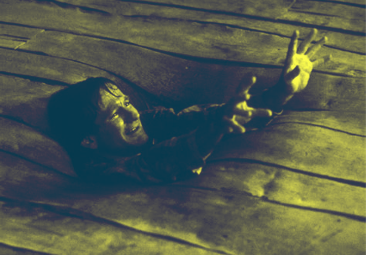
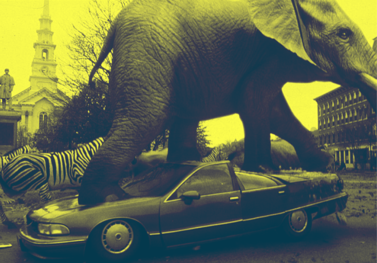

L'univers captivant de Jumanji (1995) : Quand les jeux de société prennent vie
Le film Jumanji, réalisé par Joe Johnston et sorti en 1995, est une adaptation emblématique du livre éponyme de Chris Van Allsburg, qui explore les limites entre le jeu et la réalité. Ce classique du cinéma d'aventure nous plonge dans un monde où un jeu de société magique, rempli de périls et de créatures fantastiques, prend vie de manière spectaculaire. L'histoire suit Judy et Peter, deux enfants qui découvrent un ancien jeu de société appelé Jumanji. Lorsque l'on joue, les dangers et les merveilles du jeu se libèrent dans le monde réel, entraînant les protagonistes dans une aventure pleine de suspense. Leur chemin est jalonné d'épreuves, notamment la confrontation avec le redoutable chasseur Van Pelt, tout en mettant en lumière des valeurs essentielles comme le courage, l'esprit d'équipe et l'importance de la famille.

Jumanji ne se contente pas de divertir; il soulève des questions profondes sur le pouvoir des jeux de société dans nos vies modernes. Le film souligne que chaque décision prise dans un jeu peut avoir des conséquences inattendues, une notion qui résonne particulièrement dans le contexte des jeux de société contemporains, souvent conçus pour encourager la prise de risque et la stratégie. Les mécanismes de jeu, qui sont devenus plus diversifiés et complexes au fil des ans, sont à la fois une source de plaisir et d'apprentissage, offrant aux joueurs l'occasion de développer des compétences sociales et cognitives.
L'impact de Jumanji sur la culture populaire se manifeste également à travers son héritage dans l'industrie du jeu. Les adaptations modernes, y compris les films et les jeux vidéo qui ont suivi, témoignent de l'influence durable de cette aventure sur les nouvelles générations de joueurs. La série Jumanji, notamment avec ses nouvelles versions, explore des thèmes variés et des dynamiques de groupe, incitant à la coopération et à la stratégie — des éléments clés que l'on retrouve dans les jeux de société d'aujourd'hui.

En s'attaquant aux défis que le jeu pose, les personnages de Jumanji démontrent que l'entraide et la communication sont essentielles pour surmonter les obstacles. Cette dynamique a également trouvé sa place dans les jeux modernes, qui favorisent des interactions sociales riches et des expériences collectives. Dans le cadre d'un jeu, la collaboration entre les joueurs devient souvent nécessaire pour progresser, et cela renforce les liens entre amis et familles.
Le film offre également une réflexion sur l'importance de l'imaginaire et de l'aventure dans nos vies. En intégrant des éléments narratifs captivants et des visuels époustouflants, Jumanji devient une métaphore puissante de l'importance du jeu dans notre existence quotidienne, soulignant son rôle dans le développement personnel et social. Les jeux de société, en tant que vecteurs d'interaction humaine et d'apprentissage, peuvent transformer des soirées ordinaires en moments inoubliables.

En explorant l'univers fascinant de Jumanji, nous pouvons envisager comment ce jeu légendaire a influencé non seulement le cinéma, mais aussi la conception des jeux de société modernes. Le film rappelle que le jeu est bien plus qu'un simple divertissement ; c'est une aventure à vivre ensemble, un moyen de créer des souvenirs durables et de développer des compétences précieuses. Découvrez comment Jumanji continue d'inspirer des récits d'aventure et de façonner l'avenir des jeux de société, prouvant que les histoires les plus captivantes naissent souvent des jeux les plus inattendus.
Bande annonce du film :
En découvrir plus :

Jumanji (le livre)
Plongez dans l'univers palpitant de Jumanji, où un jeu de société mystérieux transforme l'imagination en réalité à chaque lancé de dés.

Joe Johnston
Découvrez Joe Johnston, le réalisateur de Jumanji (1995), qui allie aventure et fantastique pour créer des films captivants et enrichir le cinéma moderne.

Poker Face - Lady gaga
Plongez dans l'univers de Poker Face, le hit emblématique de Lady Gaga, qui explore les thèmes de l'amour et du mystère à travers une mélodie entraînante et des paroles captivantes, transformant la scène pop des années 2000.